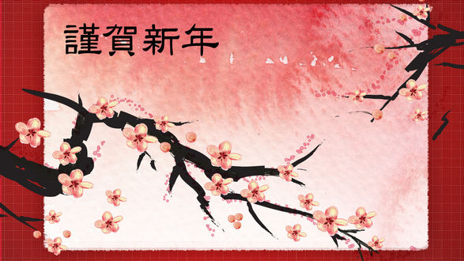

Сакура
В Японии вишнёвый цвет символизирует облака (благодаря тому, что множество цветов сакуры часто распускаются вместе) и метафорически обозначает эфемерность жизни. Это второе символическое значение часто ассоциируется с влиянием буддизма, являясь воплощением идеи о моно-но аварэ. Связь сакуры с моно-но аварэ известна с XVIII века, когда она возникла у Мотоори Норинага. Мимолётность, чрезвычайная красота и скорая смерть цветов часто сравнивается с человеческой смертностью. Благодаря этому цветок сакуры глубоко символичен в японской культуре, его образ часто используется в японском искусстве, аниме, кинематографе и других областях.
Лучший среди цветов - сакура, лучший среди людей - воин